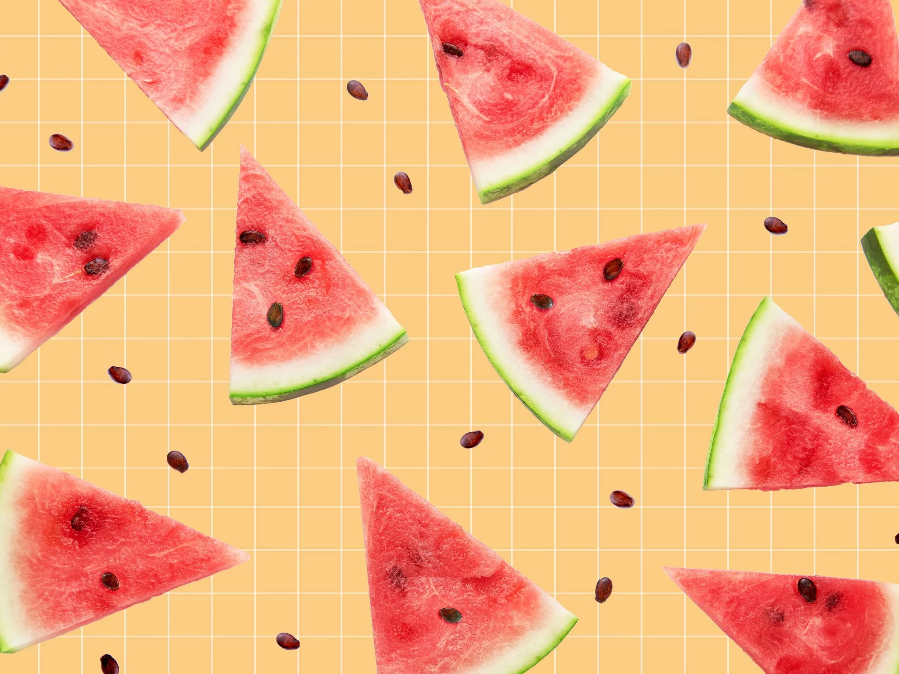

Watermelon is a sweet, commonly consumed fruit of summer, usually as fresh slices, diced in mixed fruit salads, or as juice.

Water Malone

Watermelon is a sweet, commonly consumed fruit of summer, usually as fresh slices, diced in mixed fruit salads, or as juice.